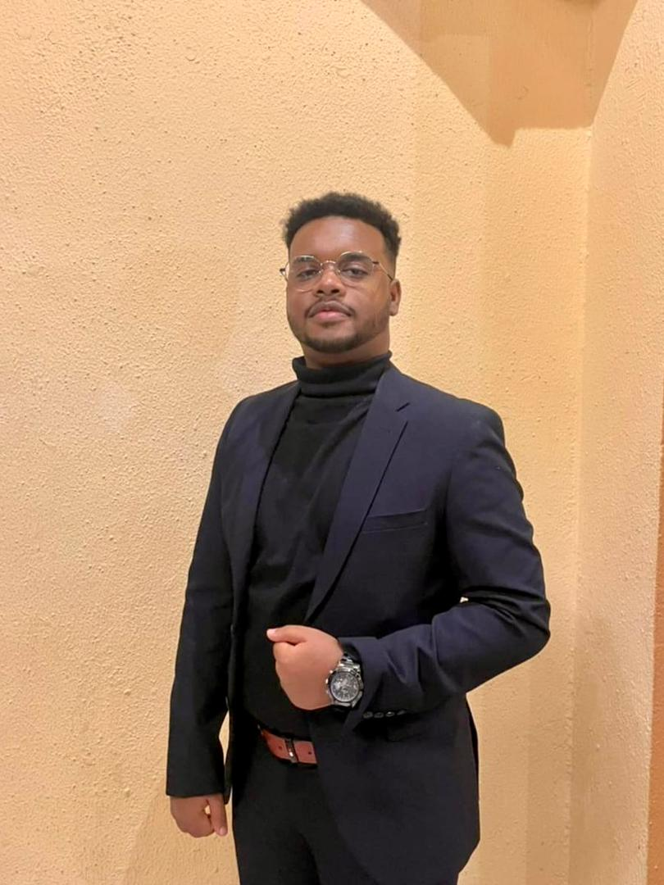

Current Status
Open to Internship Opportunities
Welcome, I'm
Alwaleed Hassan
Computer Science (Artificial Intelligence) Student
I am passionate about building practical AI and data driven solutions that support real world decision making. My interests include machine learning, predictive maintenance, anomaly detection, database systems, and intelligent analytics dashboards.

AI Portfolio
A professional space to present my AI journey, technical skills, certificates, education, and internship readiness.
Quick Overview
What I Focus On
AI & Machine Learning
Building knowledge in machine learning, anomaly detection, predictive maintenance, and intelligent data-driven solutions.
Data Analytics
Working with data preparation, analysis, visualization, reporting, and decision-support dashboards.
Databases
Learning database design, SQL, Oracle Database foundations, and structured data management for applications.
AI-Powered Systems
Interested in practical systems that combine AI, software, dashboards, and automation to solve real problems.
Career Goal
Seeking internship opportunities where I can apply AI, analytics, and technical skills in real company projects.